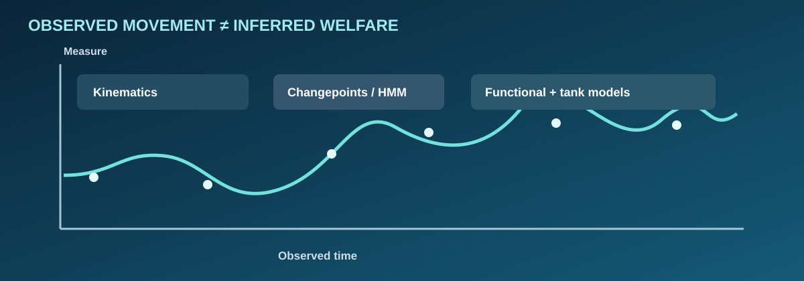

Behavioural states, longitudinal models and functional trajectories
Source:vignettes/articles/behavioural-models.Rmd
behavioural-models.RmdBehavioural modelling
Behavioural features are measurement-derived summaries. A detected statistical state change is not automatically a stress response or a welfare diagnosis.

Conceptual visualization only; no physiological or welfare class labels are implied.
Choose an analysis by scientific question
| Question | Available methods | Important assumption |
|---|---|---|
| Did the mean of a feature change? | aqt_state_changepoint() |
Descriptive segmentation with penalty and supported timestamps |
| How do supplied latent states explain observations? | aqt_hmm_decode() |
Gaussian state means, SDs and transition model are supplied |
| Can transition probabilities be learned? | aqt_hmm_transition_fit() |
State emission means/SDs remain externally specified |
| How does a model generalize? | aqt_hmm_holdout_score() |
Hold out genuinely independent tanks as appropriate |
| Can we test known synthetic recovery? |
aqt_hmm_simulate_truth(),
aqt_hmm_recovery_audit()
|
Synthetic truth does not establish real welfare validity |
| What changes around logged interventions? |
aqt_hmm_event_tank_epochs(),
aqt_hmm_tank_event_contrast()
|
Complete supported epochs and independent treatment tanks |
| Are smooth trajectory modes shared? |
aqt_trajectory_grid_pca(),
aqt_sparse_fpca_fit()
|
Dense grids differ from sparse, irregular functional estimation |
| Are event curves correlated within fish? | aqt_functional_longitudinal_fit() |
Nested tank/fish model assumptions and within-fish correlation |
Gaussian HMM interpretation
A Gaussian HMM can attach probabilities to abstract, analyst-specified states based on a time series such as speed. It does not automatically estimate externally valid biological categories such as fear, positive welfare, hunger or stress.
Recorded observation steps may occur at uneven temporal intervals. A per-step transition probability should not be presented as a continuous-time transition rate without a matching model.
Gap-safe trajectories
Tracking loss, segmentation failures and long observation gaps need explicit handling. No interpolation should silently convert a 4-second disappearance into a continuously observed path.
Read source protocol, source protocol, source protocol and source protocol.
Plotting and reporting
Use aqt_plot_changepoints(),
aqt_plot_grid_pca()
and aqt_plot_speed_response()
where the stated data contracts are satisfied. Report the source signal,
time window, state names as analyst-defined, and independent
biological validation separately.